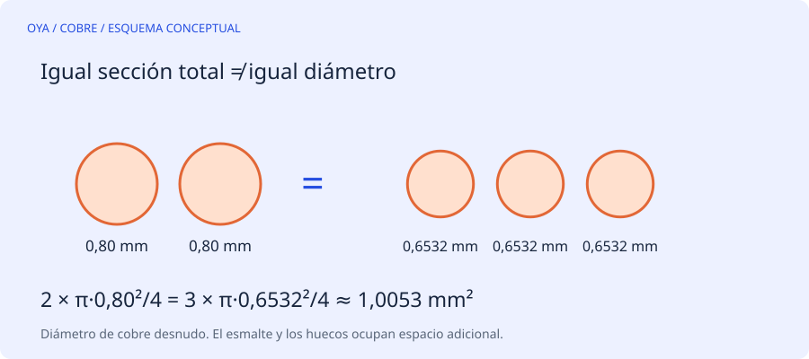

La magnitud que se conserva es el área
Dos hilos de 0,50 mm no equivalen a un hilo de 1,00 mm. El área crece con el cuadrado del diámetro. Cada hilo de 0,50 mm tiene aproximadamente 0,1963 mm² de cobre; dos suman 0,3927 mm². Un hilo de 1,00 mm tiene 0,7854 mm²: el doble de sección total que los dos anteriores.
Para sustituir un grupo de n₁ hilos de diámetro desnudo d₁ por n₂ hilos iguales, la equivalencia geométrica es d₂ = d₁√(n₁/n₂). El resultado no tiene por qué coincidir con un diámetro comercial disponible.
Ejemplo: sustituir dos hilos de 0,80 mm
El grupo original tiene 2·π·0,80²/4 = 1,0053 mm². Si se desea emplear tres hilos, el diámetro teórico de cada uno será 0,80√(2/3) = 0,6532 mm. Tres hilos de 0,65 mm dan aproximadamente 0,9955 mm², un 0,98 % menos de cobre que el grupo original.
| Grupo | Sección total de cobre |
|---|---|
| 2 × 0,80 mm | 1,0053 mm² |
| 3 × 0,6532 mm | 1,0053 mm², teórica |
| 3 × 0,65 mm | 0,9955 mm² |
| 1 × 1,13 mm | 1,0029 mm² |
La diferencia porcentual debe calcularse sobre el área, no sobre el diámetro. Para decidir si una sustitución es aceptable también se necesitan corriente, temperatura, llenado y especificaciones del devanado.
El esmalte cambia el espacio necesario
La equivalencia anterior usa diámetro de cobre desnudo. El diámetro exterior incluye el esmalte y depende del grado de recubrimiento y del producto. Al aumentar el número de hilos puede crecer la proporción de aislante dentro de la ranura. Además, los círculos dejan huecos al empaquetarse; la suma de áreas de cobre no describe toda la ocupación física.
Por eso conservar la sección no garantiza que la bobina entre. Hay que considerar el aislamiento de ranura, los separadores, las cuñas, el radio de curvatura y las cabezas. La ficha del fabricante del alambre proporciona el diámetro exterior real que debe usarse en una comprobación de espacio.
Paralelo no significa cualquier recorrido
Los hilos que trabajan en paralelo deben pertenecer al mismo circuito y tener recorridos y conexiones apropiados. Un empalme deficiente o una diferencia importante de resistencia puede repartir mal la corriente. Tampoco debe confundirse el número de hilos juntos con el número de ramas paralelas por fase: son decisiones distintas del diseño.
Cómo usar el resultado de la calculadora
Introduce el diámetro desnudo medido sin rebajar el cobre al retirar el esmalte. Anota cuántos hilos componían el conductor original y cuántos se proponen. El resultado expresa una equivalencia geométrica exacta; después compara con medidas comerciales y calcula su error de sección. Nunca reduzcas el alambre únicamente para lograr que cierre la ranura: antes hay que revisar espiras, disposición y datos de partida.
Fuentes y alcance
Referencia de consulta: EASA/AEMT: estudio y guía de buenas prácticas. Los ejemplos numéricos son educativos y no describen un trabajo realizado.